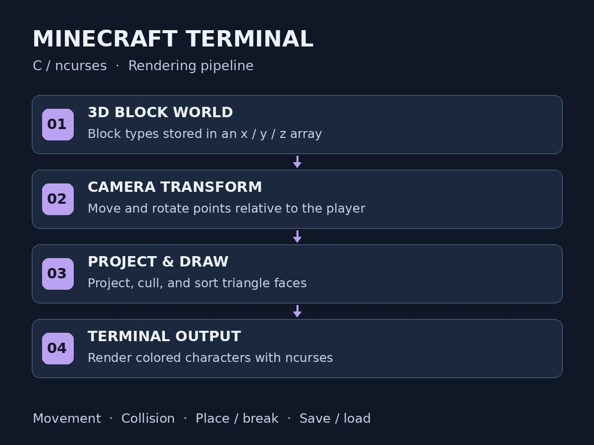

C · ncurses · 3D Graphics
Minecraft Terminal
A Minecraft-inspired 3D block game that runs in the terminal. The project includes player movement, collision detection, placing and breaking blocks, and saving and loading worlds.
I used transformation matrices to project the world onto the screen and ncurses to display the graphics. This project helped me practice C, arrays, debugging, and the math behind 3D rendering.
View Minecraft Terminal on GitHub (opens in a new tab)